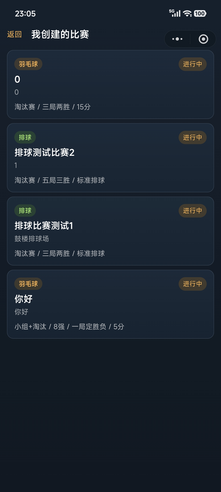
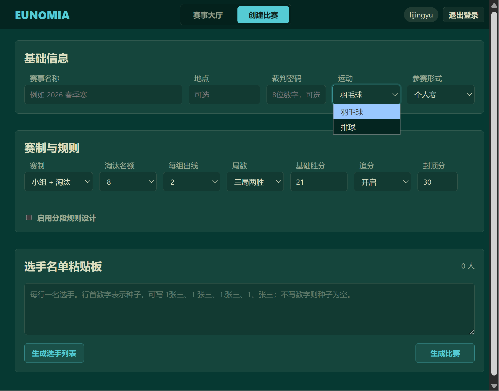
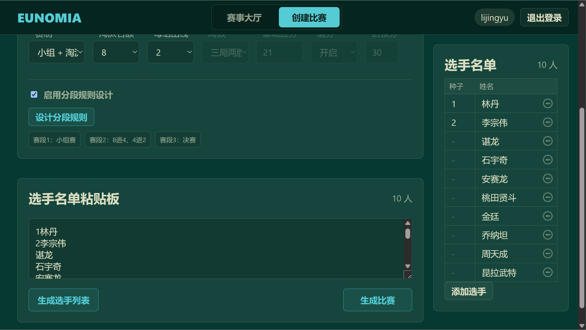
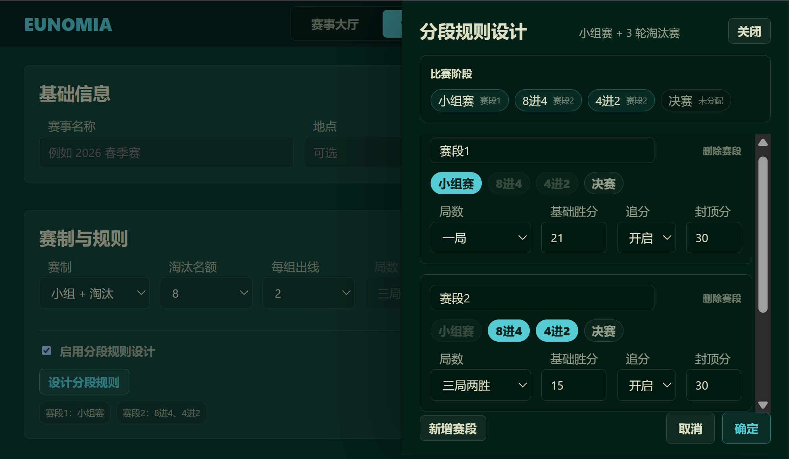
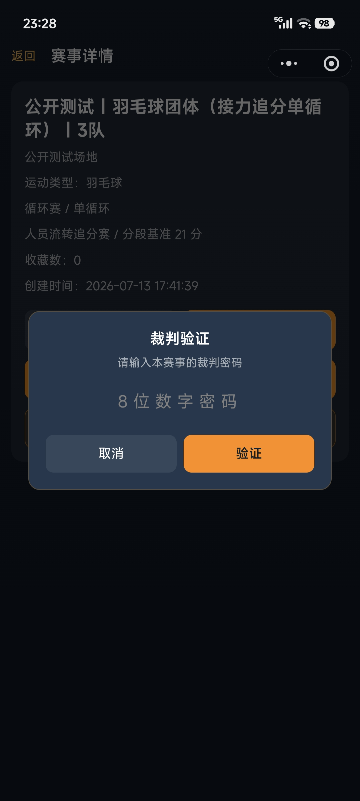

快捷粘贴板-一键生成名单
很多比赛的报名名单已经存在于 Excel、微信群、报名表或其他聊天记录中。如果再逐个点击、逐个输入，浪费时间且易出现错漏。 个人赛录入选手名单或团体赛队伍录入队员名单时，可以直接把已有名单整列复制到输入框中。系统会按照换行自动拆分名单，去掉空行和多余空格，并把每一行整理成一名参赛选手（以及他的种子序号或队内号码） 名单生成后，主办方还可以继续检查、修改或补充，确认无误后直接生成比赛，高效快捷。
不管是羽毛球个人赛、羽毛球团体赛，还是排球比赛，Eunomia 的基础流程都是一样的：先登录并完善资料，再创建赛事、选择赛制、录入名单、查看赛程推进、授权裁判，最后在赛事结束后归档。
用户用微信身份登录系统。第一次登录后，需要先完善昵称和头像，完善后才能创建比赛、收藏比赛、进行裁判录入，录入裁判身份后即可对相应赛事进行执裁等操作。 未完善资料时，可以浏览各赛事公开展示信息，无法进行更多操作。


需先填入比赛名称、地点、运动类型、比赛赛制、分数配置、裁判口令等基本信息，然后进行选手/队伍名单录入。 系统会依据相关信息生成赛事详情页、并按对应规则生成赛程，包含分组情况、小组/循环赛场次安排、对阵晋级树等。
很多比赛的报名名单已经存在于 Excel、微信群、报名表或其他聊天记录中。如果再逐个点击、逐个输入，浪费时间且易出现错漏。 个人赛录入选手名单或团体赛队伍录入队员名单时，可以直接把已有名单整列复制到输入框中。系统会按照换行自动拆分名单，去掉空行和多余空格，并把每一行整理成一名参赛选手（以及他的种子序号或队内号码） 名单生成后，主办方还可以继续检查、修改或补充，确认无误后直接生成比赛，高效快捷。
有些比赛不是从头到尾都用同一套规则。小组赛、前期淘汰赛、决赛等不同赛段可能需要配置不同的分数规则。 小程序端支持小组赛和淘汰赛分别配置一套规则；网页端创建比赛则更加灵活，支持将小组赛以及淘汰赛的每一轮（如 8进4、半决赛、决赛）自由组合成不同赛段，并为每个赛段单独配置比赛规则（如小组赛一局 15 分，决赛三局 21 分）。



赛事创建完成后，系统会将比赛的基本信息展示在赛事详情里。 参赛者和观众可以在赛程页面查看比赛进展；创建者和裁判可以从赛程页面进入对应具体比赛计分页面，完成执裁操作。 每场比赛结算后，系统会根据赛制自动推进赛程。小组/循环赛更新排名表，淘汰赛将胜者推入下一轮比赛。

创建者可以针对赛事设置裁判口令。裁判输入口令后，就能获得该赛事的执裁权限。 执裁权限对整个赛事生效，并非仅针对某一场比赛。 未录入裁判身份的选手和观众只能查看比赛基本信息、赛程进度展示、已结束比赛的赛后记录，无法对某场比赛进行执裁。

裁判进入某一场比赛后，在计分板上完成加分、换边、暂停、退赛等操作。 比赛结算后，系统自动进入赛后记录表界面，裁判联系双方签字确认并补齐日期等信息后保存完整赛后记录，同时系统会自动同步赛果、推进赛程。
赛事比赛全部结束后，创建者可以归档赛事。 归档不会删除数据，但这场比赛会从赛事大厅、我的比赛和收藏列表里隐藏。归档后，只有创建者能在自己主页的“已归档比赛”里看到它，其他人无法再搜索到该赛事。 创建者也可以在已归档比赛里对赛事进行取消归档操作，让它重新回到正常列表。